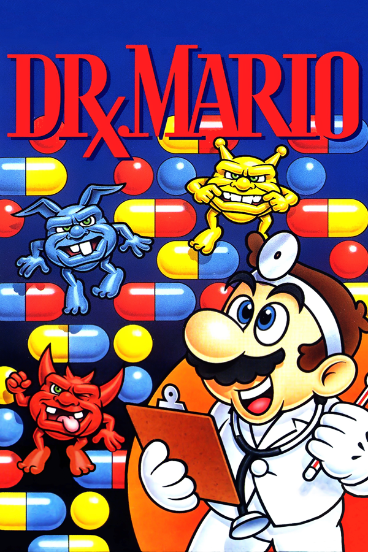

|  | |
| Playtime | Not Played |
| Last Activity | Never |
| Added | 4/29/2025 4:51:34 |
| Modified | 4/29/2025 23:39:20 |
| Completion Status | Not Played |
| Library | Playnite |
| Source | |
| Platform | Nintendo Entertainment System |
| Release Date | 7/27/1990 |
| Community Score | 72 |
| Critic Score | |
| User Score | |
| Genre | Puzzle |
| Developer | Nintendo R&D1 |
| Publisher | Nintendo |
| Feature | Multiplayer Single Player |
| Links | Wikipedia U.S. patent 5,265,888 Dr. Mario |
| Tag | [Arcade System] Nintendo VS. System [Arcade System] PlayChoice-10 [People] composer: Hirokazu Tanaka [People] designer: Takahiro Harada [People] producer: Gunpei Yokoi |
Dr. Mario is a 1990 puzzle video game developed and published by Nintendo for the Nintendo Entertainment System and Game Boy. It was produced by Gunpei Yokoi and designed by Takahiro Harada. The soundtrack was composed by Hirokazu Tanaka.
It is a falling block puzzle game, in which the player's objective is to destroy the viruses populating the on-screen playing field by using colored vitamin capsules that are automatically tossed into the field by Dr. Mario. The player manipulates the falling capsules, to align the same colors, which destroys viruses. The player progresses through the game by eliminating all the viruses on the screen in each level.
Dr. Mario was a commercial success, with more than 10 million copies sold worldwide across all platforms. It received generally positive reviews, appearing on several lists of "Best Nintendo Games of All Time". It has been ported, remade, or had a sequel on every Nintendo home console since the NES, and on most portable consoles, including a re-release in 2004 on the Game Boy Advance in the Classic NES Series. It was modified into minigames in WarioWare, Inc.: Mega Microgames!, Brain Age 2: More Training in Minutes a Day!, and Brain Age: Concentration Training. Dr. Luigi is a spin-off for Wii U, released on December 31, 2013, as part of the Year of Luigi celebration.
Dr. Mario is a falling block tile-matching video game. Mario assumes the role of a doctor, tossing two-colored medical capsules into a medicine bottle representing the playing field. This area is populated by viruses of three colors — red, yellow, and blue — which stay in their starting positions until removed. In a style similar to Tetris, the player manipulates each capsule as it vertically falls, able to move it left or right and rotate it 90 degrees clockwise or counter-clockwise. When matching colors of capsule halves and viruses touch sequentially 4-in-a-row, they disappear. Any remaining half or whole capsules which are not supported will fall to the bottom of the playing field or until hitting another supported object, and any new 4-in-a-row alignments also disappear. The main objective is to eliminate all viruses from the playing field, finishing each level. A game over occurs if capsules fill the playing field in a way that obstructs the bottle's narrow neck. After each 5th level is completed on Medium or High difficulty, up to level 20, a cutscene shows the virus trio sitting on a tree as music plays and an object flies across the screen.
The options screen configures the starting level, game speed, and music. The player chooses a starting level between 0 and 20 that determines the number of viruses to clear, and one of three speeds of the falling capsules. The player's score is based on the elimination of viruses and the chosen game speed, with bonus points for clearing more than 1 in a single line. Dr. Mario offers a multiplayer gaming mode in which two players compete in separate playing fields. Each player's goal is to clear the private playing field of viruses first. Eliminating multiple viruses or initiating chain reactions can add capsules to the opponent's playing field. A player wins a single game upon eliminating all the viruses or upon the other player's bottle filling. The first player to win three games wins overall.
The NES and Game Boy versions of the games have slight differences. The Game Boy version has a slightly smaller playfield than the NES one and the games features slightly different cutscenes showcasing the viruses in different locations. If the player manages a chain of four or more in the Game Boy version, then the Invicinble Music from Super Mario Bros. (1985) will play briefly.
Dr. Mario was produced by Gunpei Yokoi, creator of the Game Boy and Game & Watch handheld systems. Takahiro Harada, producer of the Metroid series, was its designer. Its music was composed by Hirokazu Tanaka, and has been re-used and arranged such as in the Super Smash Bros. series.[citation needed]
Dr. Mario spawned several remakes and ports that were released on various Nintendo consoles. The original version's multiplayer portion was ported to two Nintendo arcade systems: the Nintendo VS. System (as Vs. Dr. Mario) and the PlayChoice-10. Vs. Dr. Mario was first shown at Nintendo's Seventh Annual Distributor Meeting in San Diego, and both versions were released simultaneously in August 1990. An enhanced remake of Dr. Mario was paired with Tetris in the Super Nintendo Entertainment System compilation game Tetris & Dr. Mario, released on 30 December 1994. This was re-released in Japan on 30 March 1997, as a downloadable game for the Super Famicom's Satellaview peripheral, with the name Dr. Mario BS Version. It was re-released again in Japan for the Super Famicom's and Game Boy's downloadable Nintendo Power cartridges.
The NES version was ported twice to the Game Boy Advance: first in 2004 as one of thirty games in the Classic NES Series (Famicom Mini Series in Japan), then bundled with a version of the Puzzle League series in 2005 as Dr. Mario & Puzzle League, with updated graphics and new music. Nintendo Puzzle Collection and the Nintendo GameCube Preview Disc, both released in 2003 for the GameCube, can copy the NES version of Dr. Mario to the Game Boy Advance using the Nintendo GameCube – Game Boy Advance link cable. The NES version was released on the Wii U Virtual Console in 2014 and was one of the launch games for the Nintendo Classics service on September 19, 2018. The original Game Boy version was re-released on the Nintendo 3DS Virtual Console in 2011 and 2012, and on the Nintendo Classics service on March 12, 2024.
Dr. Mario received generally positive reviews, although some parents were critical of the premise of medicine in a children's game. The Game Boy version received positive reviews from Joystick and Zero magazines, the latter comparing it favorably with Tetris and Connect Four while stating it is "easy to play and impossible to master". ACE criticized the uninspiring graphics, repetitive play, and "plagiarism" while comparing it unfavorably with Tetris and Connect Four. In the Japanese magazine Famicom Tsūshin, the four reviewers said that while the game is similar to Tetris, they still found it fun with one reviewer saying it was more fun to play as a two-player game. The same four reviewers also complimented the Game Boy version of the game, with one reviewer feeling that the game was slightly worse due to the lack of color on the Game Boy making it harder to decipher some gameplay elements.
In Japan, 2.08 million copies were sold for the Game Boy, 1.53 million for the Famicom, and 248,045 for the Game Boy Advance, for a total of 3,858,045 cartridges sold in Japan. In North America, 2.5 million copies were sold within six weeks of release. Worldwide, 5.34 million copies were sold for the Game Boy and 4.85 million for the Nintendo Entertainment System, for a total of 10,438,045 cartridges sold worldwide across all platforms.[citation needed]
Allgame praised the NES version, stating that on its release, "when puzzle games were flooding the market, Dr. Mario stands out as one of the best, combining a smooth learning curve, playful graphics and memorable tunes" and "fundamental concepts may be simple, but the addictive gameplay becomes progressively more complex as the speed increases and additional viruses are added."
Dr. Mario was rated the 134th best game on a Nintendo system in Nintendo Power's Top 200 Games list, the 7th best Mario game of all time on ScrewAttack's Top 10, and the 51st best NES game of all time by IGN. IGN also rated the soundtrack, composed by Hirokazu Tanaka, as seventh in its list of the top ten greatest 8-bit soundtracks. GamesRadar ranked it the 13th best NES game ever made, calling it "one of the most celebrated of the [puzzle] genre". Game Informer's Ben Reeves called it the seventh best Game Boy game. In 2019, PC Magazine included Dr. Mario on their "The 10 Best Game Boy Games".
The Game Boy Advance re-release in the Classic NES series is rated 66/100 on Metacritic based on 10 reviews. Most reviews pointed out the game's addictiveness and praise the addition of wireless multiplayer, but some questioned the relevance of the standalone re-release. Eurogamer said the game was "still as playable, addictive, and maddening as it was back in 1990" but criticized Nintendo for re-releasing classic games as standalone games in the Classic NES Series instead of as a compilation, like Atari's Atari Anthology or Midway's Midway Arcade Treasures.
Craig Harris of IGN sarcastically expressed unease over the game's use of medicine. He enjoyed the addictive gameplay, but criticized the black-and-white manual which made it difficult to understand the colored gameplay mechanics. 1UP.com noted that the game's "color-matching action is more engrossing than Mario Bros.' turtle-punching platform hopping", but strongly questioned whether this re-release is worth its sale price by itself when a version of Dr. Mario was included in another Game Boy Advance game, WarioWare, Inc.: Mega Microgames!.
Henk Rogers of the Tetris Company spoke negatively about the game in an interview published in 2018, saying he "was pissed off about that game, Dr. Mario was a blatant attempt to come up with a Tetris replacement and I thought they did it in a cheesy way."
After the commercial success of Dr. Mario, Nintendo released several follow-up games. Dr. Mario 64, released in 2001 for the Nintendo 64, features Wario and several Wario Land 3 characters, and offers numerous game modes, including a story-focused single-player mode. The game supports simultaneous multiplayer for up to four players. Dr. Mario 64 was subsequently released in Japan in Nintendo Puzzle Collection for the GameCube. Dr. Mario Online Rx, released in 2008 on WiiWare, offers online multiplayer via Nintendo Wi-Fi Connection. Dr. Mario Express, released in 2009 for the Nintendo DSi, does not support multiplayer gameplay. Dr. Luigi was released in 2013 with Luigi as a playable character, all the modes in Dr. Mario Online Rx, and a new mode with L-shaped capsules. The latest installment, Dr. Mario: Miracle Cure, was released in 2015 and introduced power-ups to the series. Dr. Mario World is a mobile game. Various games in the Super Smash Bros. series have remixed musical tracks from Dr. Mario, or Dr. Mario as an unlockable playable character. Dr. Wario replaces Mario with Wario, as an unlockable minigame in WarioWare, Inc.: Mega Microgames!. A simplified version of Dr. Mario is in Brain Age 2: More Training in Minutes a Day! as the "Virus Buster" minigame, using the touch screen to drag the capsules around the playing field. The viruses are enemies in Mario & Luigi: Superstar Saga and Mario & Luigi: Dream Team. They change colors when attacked, and are all defeated when they are all the same color. In 2018 the Classic Tetris World Championship featured a Dr. Mario championship as a 'side event.'[independent source needed]